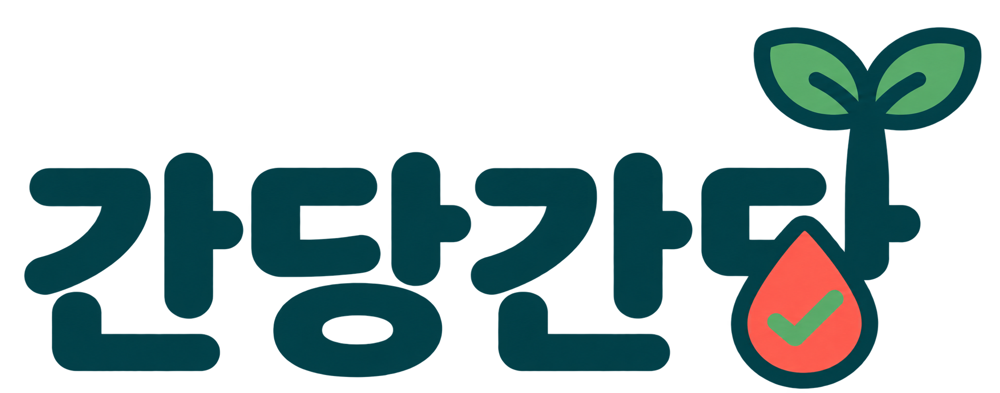

마을 먼저 둘러보기
로그인이나 건강정보 입력 없이
걷고 인사해요.

Aidentity건강 관리의 기회가 모두에게 닿도록
건강정보 입력 없이 둘러보는 작은 마을.
지금은 이동과 인사를 체험하는 환경 프로토타입입니다.

한옥 처마 아래를 걷고, 연못가에서 쉬어가세요. 십이지신 주민에게 가까이 다가가 인사할 수 있습니다.
ver.2 환경 체험로그인이나 건강정보 입력 없이
걷고 인사해요.
계정 저장과 미션 연결은
다음 단계에서 준비합니다.
초대와 공동 목표는
함께 검증할 경험입니다.
AI 당뇨 위험 예측과 픽셀 게임으로 가족과 공동체가 함께 실천하는 당뇨 예방 생활습관 챌린지
건강 웹서비스 체험